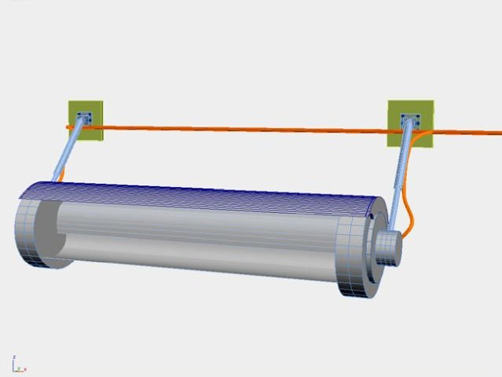
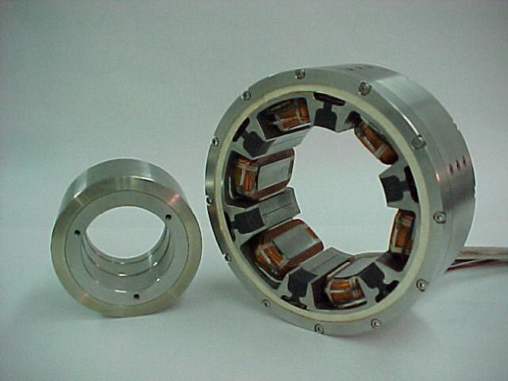
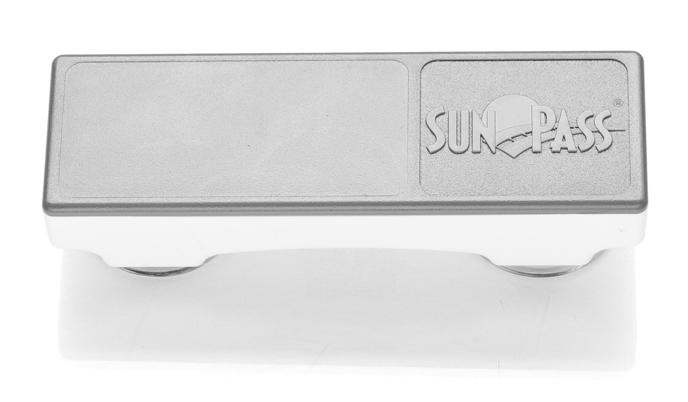

Advantages
WindAge Traffic Driven Wind Generators (TDWG) Advantages
- WindAge TDWG Systems Free Energy Sources WindAge TDWG systems produce clean power in a new way by innovatively utilizing high speed airflow created by moving vehicles and natural wind conditions.
- WindAge TDWG Systems Ease of Installation WindAge TDWG Systems are designed with adjustable mounting arms for easily adaptable installation over unpredictably angled traffic lanes and rail lines.
- WindAge TDWG Systems are cost effective to operate WindAge TDWG assemblies feature the first patented use of magnetic bearings for wind generators. These bearings are powered by either generator-produced bleed DC current or by integrated permanent magnets. By emitting little heat and no friction, they require no lubrication and operate virtually maintenance free.
- WindAge TDWG Systems are cost effective to install. WindAge TDWG Systems are designed for widespread use under existing structures such as the numerous overpasses and overhead sign frames on high-density, high-speed expressways and railways. They can also be installed in airports, existing wind farms, and on hi-rise building rooftops. Due to the mounting arm design and their manageable size and weight, they can be quickly installed. A typical roadway overpass installation of 6 units can be completed within 24 hours.
- WindAge TDWG Systems Ease of Maintenance WindAge TDWG Systems are highly efficient and virtually maintenance free because they utilize wind generators with magnetic bearings that produce virtually no heat or friction, and require no lubrication. WindAge TDWG Systems require no governor systems such as those required on propeller style windmills.
- WindAge TDWG Systems Adaptable Configurations WindAge TDWG Systems come in adaptable configurations, with features like Assemblies with Alternate Rotors with Savonius (as shown) or Helical type blades, as well as, additions like Ducted Intakes and Safety Guards.
- WindAge TDWG Systems Patented Innovation WindAge TDWG Systems assemblies feature the first patented wind generator utilization of magnetic bearings. These are efficiently powered by generator produced bleed DC current. Plus, with no heat and minimal friction, they require no lubrication and operate virtually maintenance free.
- WindAge TDWG Systems Safety Using the TDWG adjustable mounting arms, all road and rail installations maintain at least a 6-inch safety buffer between the vehicle's maximum legal height limit and the rotor assembly. If this is exceeded and the passing vehicle accidentally strikes the TDWG, the rotor vanes will simply shatter, with little energy being transferred to the vehicle.
- WindAge TDWG Systems expand the clean energy paradigm WindAge rotor assemblies can be cast from recycled plastic, thereby decreasing the overall carbon footprint associated with their manufacture, as well as helping to reduce waste in oceans and landfills.
- WindAge TDWG Systems can combine with Human Energy Harvesters and solar photovoltaic (PV) panels to create the foundation for clean, efficient, and reliable alternate-fuel-vehicle recharging sites When used in this combination, the long-recognized problem with the intermittency of alternate energy is largely solved.
TDWG's In Production
WindAge, LLC offers a range of existing products and systems
- All
- CAD
- Photos
- Videos
{kind=link}
TDWG Highway Mountings
Independently of overpasses, TDWGs can be installed every 20 to 30 feet on dedicated mounting structures as are normally used to mount Interstate highway informational signs. The output from these units can power rest stops, roadside lighting, digital Amber Alert signs, or be sent to the local grid in what is commonly called a "Community Wind" program.
{kind=link}
TDWG Overpass Mountings
Each TDWG Rotor Assembly is designed with adjustable mounting arms for easily-adapted installations over angled traffic lanes and various mounting elevations.
Read More{kind=link}
TDWG Rotor Assemblies
WindAge TDWG Systems Rotor Assemblies produce clean power by utilizing free energy from the turbulent air created by moving vehicles, augmented by the prevailing wind.
Read More{kind=link}
Prototype Clearance
{kind=link}
Prototype

Overpass Installation

TDWG Field Test Video

TDWG Development
Applications
Highways and railways are the WindAge TDWG System Primary Applications.
Highways & Overpasses
The output from these units can power rest stops, roadside lighting, digital Amber Alert signs, or be sent to the local grid in what is commonly called a "Community Wind" program. The most suitable overpass candidates will be oriented to capture the local ambient / prevailing wind. Read More
Florida High Speed Rail TDWG Application
Each pair of train-specific vertical support poles will hold a total of four TDWG assemblies. These poles will be separated by approximately 60 feet and, using this separation figure, could support 88 x 4, or 352 rail-specific TDWG units per mile. Read More
Future Development
WindAge, LLC is committed to continuous research. From this point, incremental efficiency improvements can still be had, even though a light rotor combined with magnetic bearings is already quite efficient. The results of the CFD analysis will suggest the direction fine tuning should go in relation to shrouding, ducting, spacing under an overpass, and any vehicle drag factors.
Ducting

- Ducting may not be appropriate for all overpass applications, but it will be used wherever space permits. Ongoing ducting development will strive to find the best combination of ease of manufacture, recycled materials, and efficiency. WindAge TDWG Systems Overpass Ducting uses the Bernoulli principle to further enhance output by pressurizing, shaping, speeding, and directing air to maximize flow to all rotor assemblies throughout a multiple-device installation. This "ram" effect increases rotor blade momentum and continuous rotation, which significantly increases efficiency. The ducting used for wind farm and roof top applications can be made longer, with a larger intake, since in these applications there are no highway-specific space restrictions. WindAge TDWG Systems Overpass Ducting is cost effective to produce and assemble, since its molded upper and lower sections of recycled plastic, carbon fiber, or fiberglass simply bolt together. If an over-legal-height truck trailer accidentally strikes them at speed, they will shatter, transmitting little energy to the passing vehicle.
Shrouding
- 
- Shrouding has been shown to enhance the rotor' s efficiency significantly in other vertical axis wind generator applications. WindAge TDWG Rotor Assembly Shrouding provides safety guards that protect against falling objects, if ducting is not used. They also enhance performance by controlling turbulence on the back side of the rotor assembly.
Magnetic Bearings
- 
- Magnetic bearings are now a mature technology, and are a perfect fit for the TDWG. Their use will both reduce maintenance to virtually nothing, and increase efficiency by eliminating normal bearing friction: increased outputs of more than 20% are possible. Their specific use in the TDWG is covered by both U.S. and European Union patents.
Trucker Rebates
- 
- Since the measurement of electricity is both quick and accurate, rebates can be made regularly available to truckers who choose to drive under a TDWG on the highway. This incentive will provide extra income for themselves or their companies, as well as enhance overall road safety by providing them an incentive to stay in the far-right lane. Transponders as currently used to identify drivers on toll roads will be employed to match the measured outputs to specific vehicles.
Proof Of Concept
WindAge, LLC constructed a full-scale TDWG prototype to discover if significant energy could be harvested from passing commercial traffic. The test was conducted at a local drag strip in the presence of a professional Electrical Engineer, who also formalized the results in a Report available to selected parties.
-
TDWG Concept Validation
The most important finding from the testing was that as the rotor assembly naturally decelerated through internal friction and decreasing wind velocity, the truck passing at 70mph increased the acceleration and output over 50%. This effectively "proved" the basic concept that passing traffic could generate useful electrical power. A second important finding was that the ambient wind should be captured whenever possible to keep the rotor momentum high, in preparation for the next passing vehicle.
- TDWG Outputs
- Vehicle Drag Rebuttal
-
Testing Goals
The primary goal of the prototype testing was to validate the theory that passing vehicles could have a significant accelerative and energy-boosting effect on a wind rotor's speed. This was accomplished during a test of the TDWG in conjunction with an over-the road-tractor and 53' foot long livestock trailer. On a digital meter, the output increased more than 50% over the ambient wind output. A second goal was to try to discern if there was any drag effect on the vehicle. None was noted by the driver or observers, but the in-process CFD analysis will shed further light on this.
-
Prototype Testing
A 4' x 12' rotor assembly was constructed using hollow fiberglass vanes, each in the shape of an airplane wing. These vanes were joined by 4 phenolic resin ½" thick disks. Two pancake generators formed the ends of this assembly, and the stainless steel mounting frame was bolted to both of these generators.
-
TDWG Constraints
Due to various constraints, the full scale prototype used for the proof-of-concept testing was heavy, which impeded its quick acceleration. In addition, a second pancake generator (not connected) added to the overall friction, but not to the total output. The prototype used neither ducting, magnetic bearings, nor shrouding. Production versions of the TDWG rotor assembly will be much lighter and produce considerably more energy.
Contact Us
Location:
Orlando, FL
Email:
info@windagellc.com